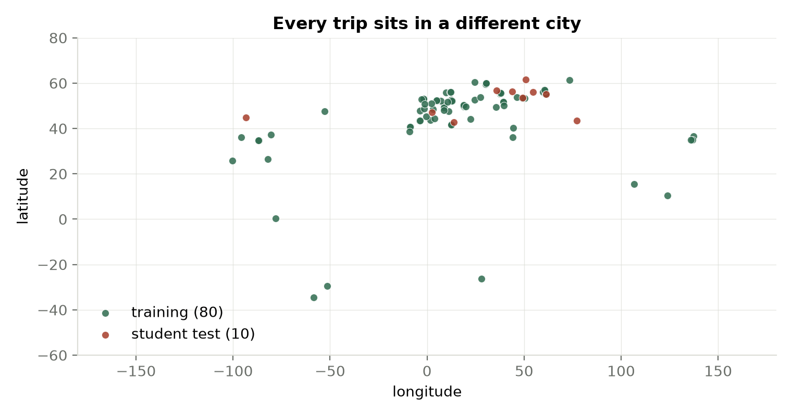
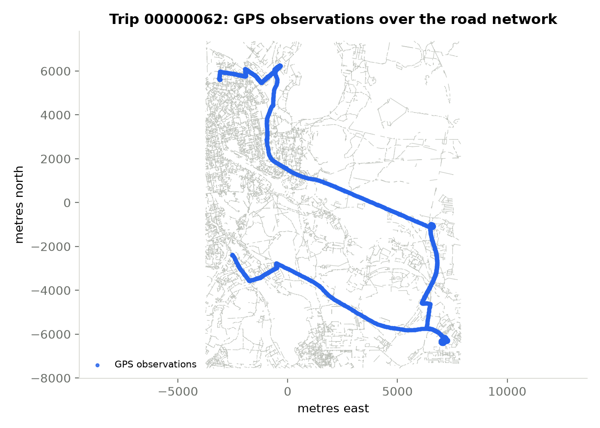
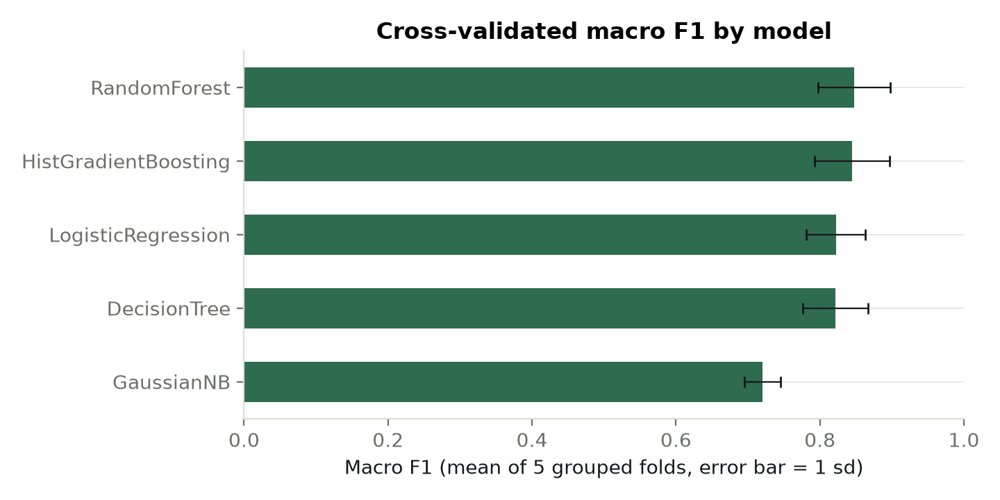
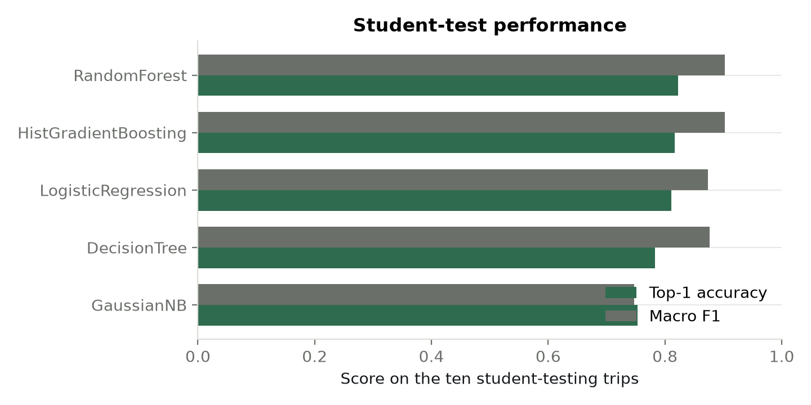
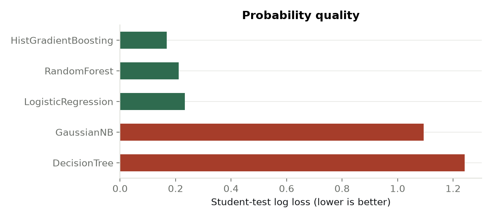
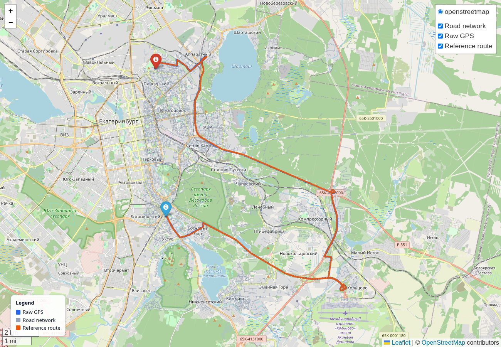
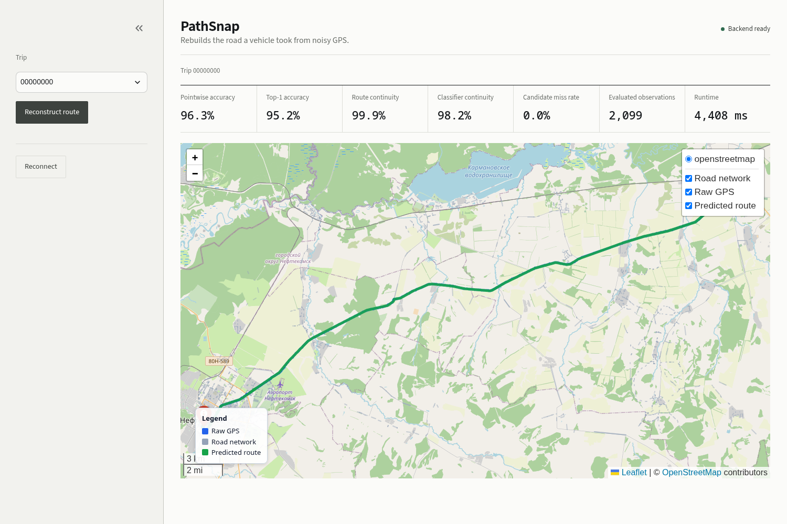
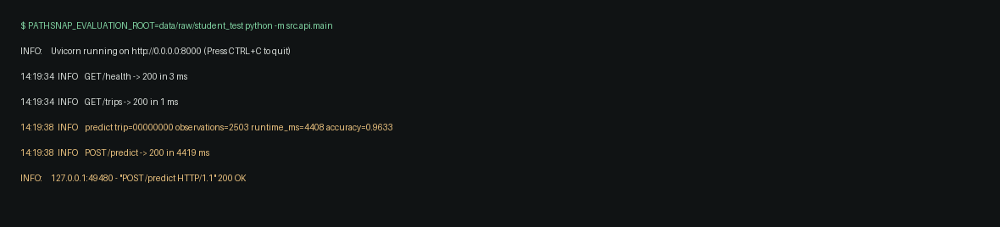

Reconstructing the road a vehicle actually drove from noisy GPS observations, using a candidate classifier and a Viterbi decoder over the road network.
The dataset arrived as 90 trip folders, each holding four headerless text files: GPS observations, road-network nodes, road-network arcs, and a reference route expressed as an ordered list of arc IDs. We treated the brief as a starting hypothesis rather than fact and audited the files before writing any pipeline code.
| Finding | Measured | Consequence for the design |
|---|---|---|
| The trips are not one city | 77 locations | Absolute coordinates cannot be features. Every trip is projected into its own local metric frame. Any global CRS would be wrong somewhere on six continents. |
| GPS noise to nearest road | 4.2 m median | A 50 m candidate radius is justified by measurement, not guesswork. |
| Network size per trip | 18,762 arcs median | A spatial index is mandatory; the largest network holds 307,392 arcs. |
| Reference route coverage | 23 trips below 70% | The reference describes part of the drive only. Observations outside it must stay unlabelled rather than be forced into a label. |
| Broken reference routes | 3 trips | Trips 00000054, 00000033 and 00000002 have usable coverage of 14%, 29% and 86% respectively and are excluded from supervision. |
| Sampling | 99.1% at 1 s | Nominal 1 Hz, with genuine gaps: 23 trips contain gaps above 60 s and one trip spans 42 hours. |

Of 1,304,456 candidate rows across the 80 training trips, 480,258 rows carried a confident label (36.8%). The remainder were withheld by the alignment rather than given a guess.

| Feature group | What it captures | Why scale-free |
|---|---|---|
| distance_m, candidate_rank | Fit of the observation to the arc | Metres and rank, identical meaning in any city |
| position_fraction, position_m, length_m | Where along the arc the point falls | Normalised and metric, so arc length does not leak city character |
| heading_sin, heading_cos, road_sin, road_cos, heading_difference_rad | Direction of travel against direction of the road | Angles encoded as sines and cosines avoid the wrap-around at 0 and 360 |
| movement_m, dt_s, speed_mps, valid_time_gap, stationary | Motion between observations | Time-based, so it survives trips from 20 to 149 km/h |
| gaussian_emission_20m, log_emission_20m | The emission term the decoder would use | Derived from distance only |
Latitude and longitude are deliberately absent. They would let a model memorise a city and fail everywhere else.
Five models from five families were trained on the labelled candidate rows of the 80 training trips and compared with grouped cross-validation. Folds are grouped by trip, so no trip contributes to both fitting and validation, and every imputer is fitted inside the fold rather than on the full dataset.
| Model | CV macro F1 | CV Top-1 | Test macro F1 | Test Top-1 | Test log loss | Fit s / fold | Inference ms |
|---|---|---|---|---|---|---|---|
| RandomForest | 0.848 ± 0.050 | 73.2% | 90.3% | 82.3% | 0.211 | 52.2 | 1000 |
| HistGradientBoosting | 0.845 ± 0.052 | 72.7% | 90.3% | 81.6% | 0.168 | 9.1 | 1224 |
| LogisticRegression | 0.822 ± 0.041 | 72.7% | 87.3% | 81.1% | 0.234 | 2.4 | 182 |
| GaussianNB | 0.720 ± 0.025 | 69.8% | 74.7% | 75.3% | 1.094 | 0.8 | 105 |
| DecisionTree | 0.821 ± 0.045 | 68.8% | 87.7% | 78.3% | 1.241 | 8.9 | 77 |
Why it was considered. The bagged ensemble. It handles feature interactions, needs little tuning, and produced the highest raw Top-1 in cross-validation. Its probability estimate is the mean of many trees, which keeps it reasonable, though the log loss is still worse than boosting. The reason it was not shipped is practical: the fitted artifact is 243 MB, which exceeds repository limits, and the accuracy advantage over boosting is 0.4 of a point.
Measured. Cross-validated macro F1 0.848 with a fold standard deviation of 0.050, and cross-validated Top-1 73.2%. On the ten student-testing trips it reached macro F1 90.3%, Top-1 82.3% and log loss 0.211, fitting in 52.2 s per fold and scoring in 1000 ms.
Fit. The gap between cross-validated and student-test accuracy is 9.1 percentage points in favour of the test partition, so there is no evidence of overfitting to the training cities.
Why it was considered. The boosted ensemble and the selected model. It matches the forest on macro F1 to three decimals and beats it on log loss by about 20 percent, which matters because those probabilities become the decoder's emissions. It is also roughly five times faster to fit and produces a 740 kB artifact. Boosting corrects sequentially, so the residual errors of early trees are what later trees learn.
Measured. Cross-validated macro F1 0.845 with a fold standard deviation of 0.052, and cross-validated Top-1 72.7%. On the ten student-testing trips it reached macro F1 90.3%, Top-1 81.6% and log loss 0.168, fitting in 9.1 s per fold and scoring in 1224 ms.
Fit. The gap between cross-validated and student-test accuracy is 8.9 percentage points in favour of the test partition, so there is no evidence of overfitting to the training cities.
Why it was considered. The linear baseline. It establishes how much of the signal is available from a weighted sum of the features, and it trains in about two seconds. It holds up better than expected, which says the features are informative and the problem is not purely interaction-driven. Its weakness is that a strictly linear boundary cannot express thresholds such as 'beyond about 25 m this candidate is wrong'.
Measured. Cross-validated macro F1 0.822 with a fold standard deviation of 0.041, and cross-validated Top-1 72.7%. On the ten student-testing trips it reached macro F1 87.3%, Top-1 81.1% and log loss 0.234, fitting in 2.4 s per fold and scoring in 182 ms.
Fit. The gap between cross-validated and student-test accuracy is 8.5 percentage points in favour of the test partition, so there is no evidence of overfitting to the training cities.
Why it was considered. Chosen as the probabilistic floor. It is cheap, gives probabilities without calibration, and its independence assumption is plainly wrong here because distance and heading are correlated. The measured result confirms that: log loss is the worst of the five by a wide margin while accuracy stays respectable, which is exactly what an over-confident independence assumption looks like.
Measured. Cross-validated macro F1 0.720 with a fold standard deviation of 0.025, and cross-validated Top-1 69.8%. On the ten student-testing trips it reached macro F1 74.7%, Top-1 75.3% and log loss 1.094, fitting in 0.8 s per fold and scoring in 105 ms.
Fit. The gap between cross-validated and student-test accuracy is 5.5 percentage points in favour of the test partition, so there is no evidence of overfitting to the training cities.
Why it was considered. Included for interpretability and to test whether axis-aligned thresholds alone are enough. It learns readable rules and trains quickly, but the log loss shows severe over-confidence: leaf probabilities collapse to 0 and 1, so the loss is an order of magnitude worse than the ensembles. Evidence of overfitting is the gap between training and validation rather than the fold spread, which stays small.
Measured. Cross-validated macro F1 0.821 with a fold standard deviation of 0.045, and cross-validated Top-1 68.8%. On the ten student-testing trips it reached macro F1 87.7%, Top-1 78.3% and log loss 1.241, fitting in 8.9 s per fold and scoring in 77 ms.
Fit. The gap between cross-validated and student-test accuracy is 9.5 percentage points in favour of the test partition, so there is no evidence of overfitting to the training cities.



After the five-model comparison, the selected algorithm was tuned with Optuna's Tree-structured Parzen Estimator, a Bayesian sampler that models which regions of the space produce good trials instead of sampling uniformly.
| Question | Answer |
|---|---|
| Which hyperparameters | max_iter, learning_rate, max_leaf_nodes, min_samples_leaf, l2_regularization |
| Ranges | learning rate 0.03 to 0.3 (log), max iterations 100 to 350 in steps of 50, leaves 15 to 63, minimum samples per leaf 10 to 60, L2 regularisation 1e-4 to 10 (log) |
| Objective | 0.7 × observation-level Top-1 + 0.3 × macro F1, averaged over three trip-grouped folds |
| Trials | 10 |
| Best objective | 0.7651 |
| Tuned student-test Top-1 | 81.5% |
| Untuned student-test Top-1 | 81.6% |
| Best configuration | Value |
|---|---|
| max_iter | 100 |
| learning_rate | 0.034292951628939645 |
| max_leaf_nodes | 57 |
| min_samples_leaf | 40 |
| l2_regularization | 0.3470266988650412 |
The tuned model did not beat the untuned one on student-test Top-1. The search record is kept in
results/optuna_trials.csv and the honest conclusion is that the default configuration
was already close to the best region of the space for this dataset.
A classifier scores each candidate independently, so consecutive observations can end up on arcs that no vehicle could drive between. The decoder resolves that by scoring whole sequences.
| Question | Answer |
|---|---|
| Hidden states | The candidate arcs available at each observation, not raw coordinates. Each state carries the arc, the projection fraction along it and the model probability. |
| Emission | The classifier's positive-class probability, clipped and normalised across the candidates of that observation, then logged. A binary probability is not a distribution over candidates, so normalisation is required before it can be compared. |
| Transition | Directed road distance from the previous candidate to the next, measured with a bounded Dijkstra over the sparse adjacency matrix. The score penalises the difference between road distance and GPS displacement, backwards movement, and speeds above 50 m/s. |
| Missing candidates | Observations with no candidate inside the radius are absent from the grid. The transition then spans the real time gap, and the response reports how many observations were affected. |
| Disconnected pairs | When no road link exists within 400 m the pair receives a heavy finite penalty scaled by straight-line distance, so one unreachable pair cannot make the whole trip undecodable. Pairs beyond 2 km are set to negative infinity. |
| Gaps | Time gaps scale the tolerance rather than forcing a split, and the speed check prevents a long gap from being decoded as a short hop. |
| Trip | Evaluable | Top-1 | Decoded | Classifier continuity | Decoded continuity | Candidate miss |
|---|---|---|---|---|---|---|
| 00000000 | 2099 | 95.2% | 96.3% | 98.2% | 99.9% | 0.0% |
| 00000007 | 929 | 97.2% | 99.0% | 99.6% | 100.0% | 0.0% |
| 00000009 | 217 | 89.9% | 94.0% | 99.5% | 100.0% | 1.4% |
| 00000052 | 150 | 99.3% | 100.0% | 94.6% | 100.0% | 0.0% |
| 00000091 | 398 | 73.9% | 79.1% | 96.2% | 100.0% | 4.8% |
Decoding improved pointwise accuracy on every trip measured, by between 0.7 and 5.3 percentage points. The improvement is largest where the classifier was weakest, which is the expected behaviour: when local evidence is ambiguous, connectivity carries the decision.
Maps are generated by src/visualization/maps.py from live data and by
tools/render_trip_map.py for report evidence. The evaluator interface renders GPS
observations, the relevant road context and the predicted route. The reference route appears only in
report maps built from training or student-test trips.

results/maps/trip_00000062_overview.html.Laptop 1 runs the FastAPI backend, which holds the model, the decoder and the reference routes. Laptop 2 runs the Streamlit interface and reaches the backend over the LAN. The interface never receives reference data: the contract has no field for it.
| Endpoint | Purpose |
|---|---|
| GET /health | Liveness, trip count and loaded model name |
| GET /trips | Trip IDs discovered from the server directory, never hardcoded |
| POST /predict | Runs the full pipeline, scores the result and returns geometry and metrics |


Every figure and table in this report is produced by the scripts in the repository from the
recorded run. The comparison tables read results/model_comparison.csv and
results/student_test_results.csv, the optimisation section reads
results/optuna_trials.csv, and the decoder comparison reads
results/api_evaluation.json, which the service writes during evaluation.
Reference routes never enter the prediction path. The service builds candidates, scores them and decodes a route before it opens the route file, and the interface has no field that could carry ground truth. Evaluator partition data was not used for training, feature selection, model choice or decoding parameters.
AI assistance was used during development and is disclosed here. Every module is covered by tests and can be explained by the team.